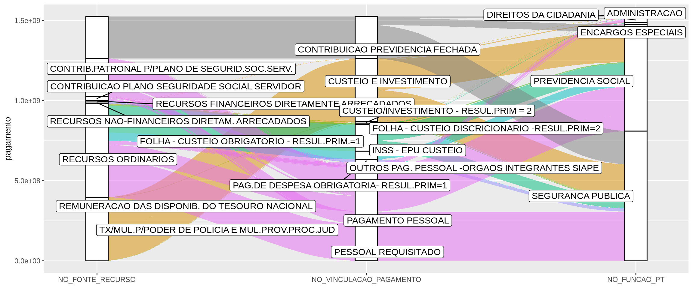

Capítulo 3 Quadro analítico histórico
3.1 Disponibilidades Líquidas
Para responder as questões (a) e (b) sobre disponibilidades líquidas das UGs, elaboramos:
- Gráficos das séries temporais das disponibilidades líquidas de cada UG e Fonte de Recurso.
- Gráficos das séries temporais das disponibilidades líquidas consolidadas por UG.
Aplicativo: Explorador das séries temporais das disponibilidades líquidas
- Indicador de disponibilidade líquida acumulante para as UGs.
3.1.1 Indicador disponibilidade líquida acumulante por UG
1) Disponibilidades Líquidas Acumulantes: Indicador que apresenta valor alto quando uma UG apresenta disponibilidade líquida que apenas cresce com o passar do tempo para uma determinada fonte de recurso.
Figure 3.1: Disponibilidade líquida por fonte de recursos do CONSELHO ADMINISTRATIVO DE DEFESA ECONÔMICA. A fonte RECURSOS NÃO-FINANCEIROS DIRETAMENTE ARRECADADOS (linha verde) é um exemplo de disponibilidade líquida acumulante.
Definição do indicador: \(P_1 + P_2\)
em que
\[ P_1 = \frac{1}{N}\sum I(y_i > y_{i - 1}) \]
e para quando a disponibilidade diminui
\[ P_2 = \frac{1}{N_{y_i < y_{i - 1}}}\sum I(|y_i -y_{i - 1}| < \sigma) \]
Em outras palavras, o indicador aponta curvas crescentes (\(P_1\)) permitindo pequenas perturbações (\(P_2\)).
Abaixo estão as UGs com os maiores valores do indicador, e suas respectivas fontes de recursos:
| UG | Fonte de Recursos | Indicador |
|---|---|---|
| CONSELHO ADMINISTRATIVO DE DEFESA ECONOMICA | RECURSOS NAO-FINANCEIROS DIRETAM. ARRECADADOS | 1.23 |
| SUPERINTENDENCIA REG. POL. RODV. FEDERAL-BA | RECURSOS DIVERSOS | 1.20 |
| FUNDO NACIONAL ANTIDROGAS | RECURSOS NAO-FINANCEIROS DIRETAM. ARRECADADOS | 1.19 |
| SUPERINTENDENCIA REG. POL. RODV. FEDERAL-GO | RECURSOS DIVERSOS | 1.14 |
| SUPERINTENDENCIA REG. POL. RODV. FEDERAL-SC | RECURSOS DIVERSOS | 1.11 |
| DEPARTAMENTO PENITENCIARIO NACIONAL | RECURSOS NAO-FINANCEIROS DIRETAM. ARRECADADOS | 1.10 |
| SUPERINTENDENCIA REG. POL. RODV. FEDERAL-RO | RECURSOS DIVERSOS | 1.10 |
| SUPERINTENDENCIA REG. POL. RODV. FEDERAL-RO | RECURSOS DIVERSOS | 1.09 |
| SUPERINTENDENCIA REG. POL. RODV. FEDERAL-PR | RECURSOS NAO-FINANCEIROS DIRETAM. ARRECADADOS | 1.07 |
3.2 Classificações Orçamentárias e Financeiras
Destino das fontes de recursos e suas respectivas funções.

- Todas as fontes de recursos são repartidas entre previdência social e segurança pública;
- Porém, se a função for INSS - EPU CUSTEIO, o recurso é destinado a Previdência social.
3.3 Comportamento do Caixa por Movimentação
- Gráficos das séries temporais dos saldos e obrigações de cada UG e Fonte de Recurso.
- Gráficos das séries temporais dos saldos e obrigações consolidados por UG.
- Gráfico dos tempos entre duas movimentações de grande porte por UG e por Órgão.
Aplicativo: Explorador das séries temporais das disponibilidades líquidas